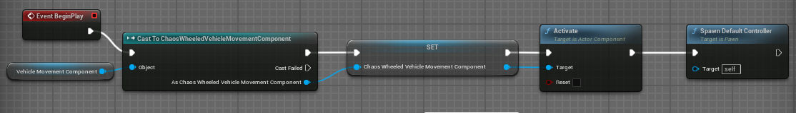
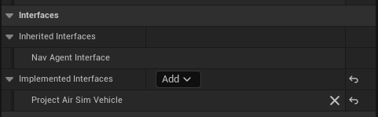
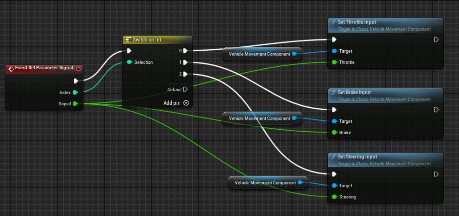

Unreal Vehicle
Project AirSim can use an Unreal Engine vehicle for its dynamics while exposing
indexed parameter values to Python. The included example uses the Chaos-based SUV
from iamaisim/ProjectAirSim.
The user-facing API is UnrealVehicle.set_parameter(index, value). The
SetParameterSignal Blueprint event receives the same index and value.
Included files
The repository already contains everything needed by the example:
Purpose |
Path |
|---|---|
Unreal SUV Blueprint and assets |
|
Robot configuration |
|
Scene configuration |
|
Runnable Python example |
|
The robot configuration selects the included Blueprint class:
{
"physics-type": "unreal-physics",
"unreal-vehicle-class": "/ProjectAirSim/VehicleAdv/SUV/SuvCarPawn.SuvCarPawn_C"
}
The SetParameter service is registered for a valid Unreal vehicle actor; no
Project AirSim controller is required.
Run the example
1. Build and start Blocks
Build Project AirSim and launch the Blocks Unreal project using the normal source build instructions. Start Play in the Unreal Editor, or launch a built Blocks executable, and leave it running while the Python client connects.
The included SUV assets must be present under the ProjectAirSim plugin content directory shown above. They are already included in this repository.
2. Install the Python client
Follow the Python client setup and activate its environment.
3. Run the client script
From the repository root:
cd client/python/example_user_scripts
python hello_unreal_vehicle.py
The script loads scene_unreal_vehicle.jsonc, sends indexed parameter values,
and prints kinematics while the SUV moves.
The essential Python API is:
from projectairsim import ProjectAirSimClient, World
from projectairsim.unreal_vehicle import UnrealVehicle
client = ProjectAirSimClient()
client.connect()
world = World(
client,
"scene_unreal_vehicle.jsonc",
delay_after_load_sec=2,
)
vehicle = UnrealVehicle(client, world, "UnrealVehicle")
vehicle.set_parameter(0, 0.5)
vehicle.set_parameter(1, 0.0)
vehicle.set_parameter(2, 0.2)
Kinematics are available through vehicle.get_kinematics(). Example scripts
can define aliases for parameter indices to keep control code readable.
How control reaches Unreal Engine
Python UnrealVehicle.set_parameter(index, value)
-> SetParameter service
-> Project AirSim Unreal bridge
-> Blueprint SetParameterSignal(Index, Signal)
-> Chaos vehicle movement component
SetParameter and SetParameterSignal both use the parameter index and signal.
Blueprint setup for a custom vehicle
The supplied Project AirSim SUV is ready to run without Blueprint changes. Follow this section when integrating a different Chaos vehicle or an actor with custom Unreal physics.
Keep the vehicle’s Blueprint base
Keep the vehicle’s existing Actor or Pawn parent class and add the
ProjectAirSimVehicle interface under Class Settings > Implemented
Interfaces. A Chaos vehicle should retain its vehicle Pawn parent because its
movement component already owns engine, wheel, suspension, steering, and brake
behavior.
Prepare a Chaos vehicle Pawn
The Blueprint needs a configured ChaosWheeledVehicleMovementComponent, wheel
setups, skeletal mesh, physics asset, and collision. Verify that the vehicle can
move normally inside Unreal before connecting it to Project AirSim.
When a runtime-spawned vehicle requires explicit activation, add this setup to Event BeginPlay:
Get the vehicle movement component.
Cast it to
ChaosWheeledVehicleMovementComponent.Store the result in a Blueprint variable for the control events.
Call Activate on the movement component.
Call Spawn Default Controller if the Pawn requires possession.

Whether Spawn Default Controller is required depends on the Pawn. Do not add
it if the vehicle deliberately uses another possession or controller setup.
Add the ProjectAirSimVehicle interface
For an existing Pawn:
Open the Blueprint and select Class Settings.
Find Interfaces in the Details panel.
Add ProjectAirSimVehicle.
Compile and save the Blueprint.

The C++ interface is IProjectAirSimVehicle.
The interface exposes only the actuator-input bridge:
Function |
Purpose |
|---|---|
|
Receive an indexed parameter value |
Kinematics are independent of this interface. For a simulating rigid body, Project AirSim captures position, rotation, linear velocity, and angular velocity directly from Chaos. Linear and angular acceleration are derived from consecutive velocity samples because Chaos does not expose an equivalent stable acceleration state for this integration. Actors without a simulating rigid body use their Unreal component or actor transform, with velocity and acceleration derived by finite differences.
On reset, Project AirSim restores the configured spawn transform and zeroes the selected physics component’s velocities directly.
Map parameters to Chaos
SetParameterSignal is called once per tick for each parameter received from
Python. The parameter indices are defined by the vehicle Blueprint. For the
included SUV, the current indices are:
Index |
Signal |
Typical Chaos node |
|---|---|---|
|
Throttle |
|
|
Brake |
|
|
Steering |
|
Implement the event with a Switch on Int, then forward Value to the
corresponding function on the stored Chaos movement component.
Typical Blueprint flow:
Event SetParameterSignal(Index, Signal)
-> Switch on Int
0 -> Set Throttle Input(Signal)
1 -> Set Brake Input(Signal)
2 -> Set Steering Input(Signal)

The mapping is an implementation detail of the Blueprint. Python sends only indices and signals.
Configure the custom Blueprint
Point unreal-vehicle-class at the generated Blueprint class. No controller is
needed for direct parameter forwarding:
{
"physics-type": "unreal-physics",
"unreal-vehicle-class": "/Game/Vehicles/BP_MyVehicle.BP_MyVehicle_C",
"sensors": []
}
Blueprint class paths end in _C. Content inside the ProjectAirSim plugin uses
the /ProjectAirSim/... mount point; project content normally uses /Game/....
Add this robot configuration to a scene and control the actor with
UnrealVehicle, just like the supplied SUV example.
Connect a controller with bridge actuators
An Unreal vehicle can use any Project AirSim controller. Add one
unreal-vehicle actuator for every controller output that the Blueprint needs.
The actuator name is the output ID requested from the controller, while
parameter-index selects the SetParameterSignal index on the Unreal vehicle:
{
"controller": {
"id": "PX4_Controller",
"type": "px4-api",
"px4-settings": {
"actuator-order": [
{ "id": "motor_1" },
{ "id": "motor_2" }
]
}
},
"actuators": [
{
"name": "motor_1",
"type": "unreal-vehicle",
"enabled": true,
"unreal-vehicle-settings": { "parameter-index": 0 }
},
{
"name": "motor_2",
"type": "unreal-vehicle",
"enabled": true,
"unreal-vehicle-settings": { "parameter-index": 1 }
}
]
}
Most controllers return one value for each actuator ID, so
control-signal-index defaults to 0. Controllers such as SimpleDrive return
several values together. In that case, set control-signal-index explicitly
for each bridge. The supplied robot_unreal_vehicle_simpledrive.jsonc maps its
[throttle, steering, brake] output to the SUV Blueprint’s [0, 2, 1]
parameter indices.
The SimpleDrive example exposes the standard Rover API, including
set_rover_controls and move_on_path_async. The same bridge mechanism also
allows drone controllers and custom controllers to drive an Unreal vehicle
without controller-specific Unreal code.
Troubleshooting
The vehicle does not spawn
Confirm the class path is
/ProjectAirSim/VehicleAdv/SUV/SuvCarPawn.SuvCarPawn_C.Confirm the SUV assets are present in the ProjectAirSim plugin.
Check
projectairsim_server.logfor class-loading errors.
The script cannot find the scene configuration
Run it from client/python/example_user_scripts, as shown above, so the default
simulation configuration directory resolves to its sim_config subdirectory.
The vehicle spawns but does not move
Confirm Python uses
UnrealVehicle.set_parameter()with valid parameter indices and values.Confirm the Blueprint implements
ProjectAirSimVehicleand maps indices 0, 1, and 2 to its Chaos movement component.Confirm the Unreal vehicle movement component is active and the wheels have valid Chaos configurations.
SUV assets
When UE_ROOT is set, the simlibs_* build targets automatically download the
SUV asset pack from the URL in tools/assets/suv-assets.json and install it at
unreal/Blocks/Plugins/ProjectAirSim/Content/VehicleAdv/SUV. The installer
records that URL and downloads the pack again if the configured URL changes,
for example when switching from version 1.0.0 to 1.1.0.
Developers can create a new pack from an installed SUV directory with:
.\tools\assets\package_suv_assets.ps1 `
-OutputPath C:\tmp\ProjectAirSim-SUV-Assets-v1.0.0.zip
or on Linux:
./tools/assets/package_suv_assets.sh /tmp/ProjectAirSim-SUV-Assets-v1.0.0.zip
After publishing a new pack, update tools/assets/suv-assets.json with its
version, URL, filename, and SHA-256 checksum.